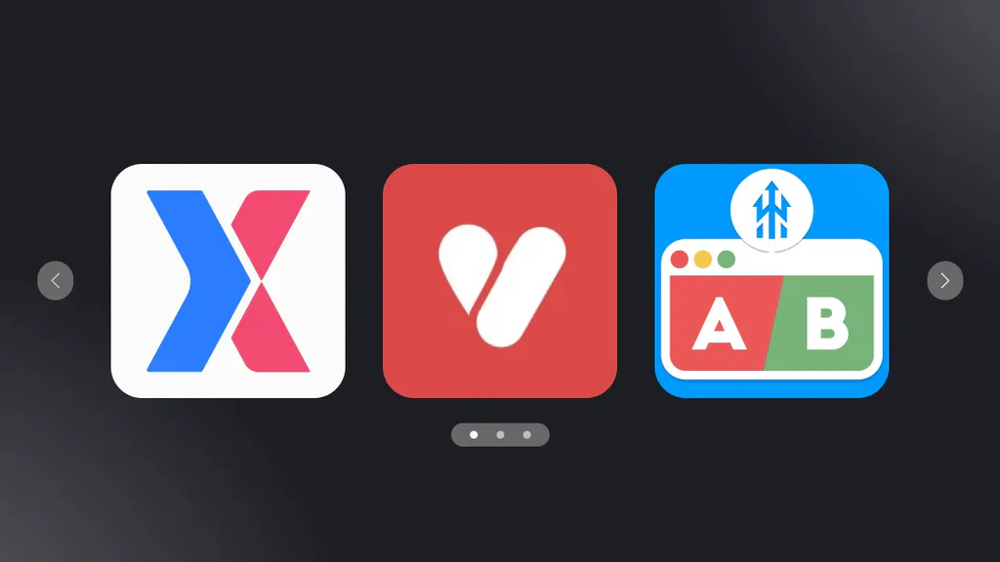
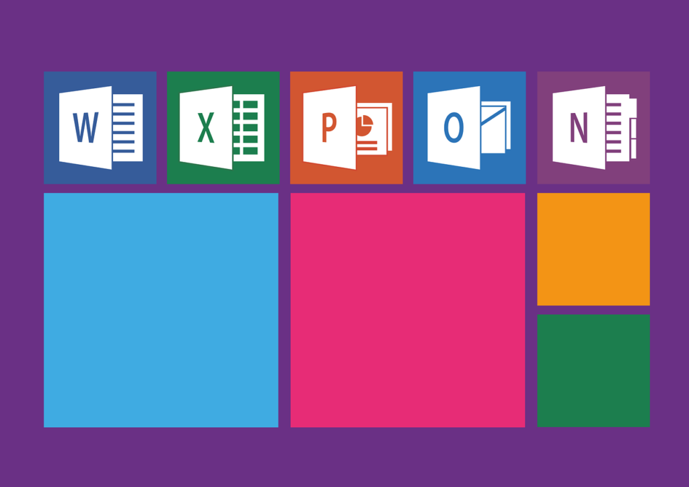
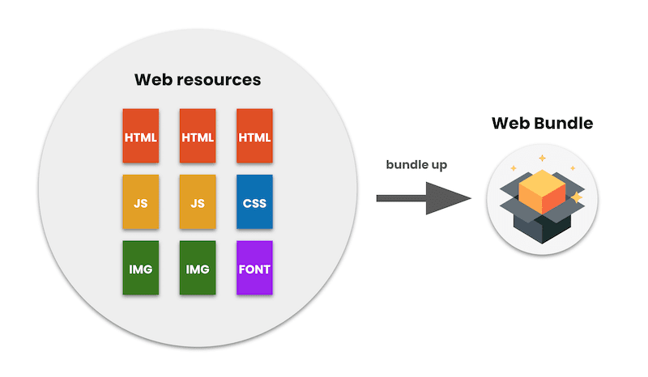

Empaquetado, Herramientas y Despliegue de Aplicaciones

El empaquetado de aplicaciones consiste en preparar una app para su distribución, instalación o despliegue, agrupando todos los archivos necesarios en un formato específico. Esto incluye compilar, optimizar, generar instaladores o contenedores y firmar los paquetes.
Tipos de Empaquetado
1. Paquetes de Aplicación Móvil
Android: APK o AAB. Contienen código, recursos y librerías. Ejemplo: Android Studio genera miapp.apk.
iOS: IPA. Contiene ejecutable, recursos y certificados. Ejemplo: Xcode genera MiApp.ipa.
2. Paquetes de Aplicación de Escritorio
Windows: EXE o MSI/MSIX. Contienen programa, librerías y scripts. Ejemplo: Electron Builder genera MiApp.exe.
macOS: DMG o PKG. Incluyen la app y recursos. Ejemplo: Xcode crea MiApp.dmg.
Linux: DEB o RPM, empaquetando app y dependencias. Ejemplo: Un paquete .deb de Ubuntu.
3. Paquetes de Aplicación Web
HTML, CSS, JS, imágenes y librerías empaquetadas en bundles optimizados. Herramientas: Webpack, Vite, Rollup. Ejemplo: React genera bundle.js e index.html.
4. Paquetes de Contenedores
Aplicación con dependencias y sistema operativo mínimo en contenedor. Formato: Docker Image. Ejemplo: Node.js empaquetado en Docker para Kubernetes o nube.
5. Paquetes de Librerías o Componentes
Para reutilización en otros proyectos.
Formatos: NPM (JS), Maven/JAR (Java), PyPI/Wheel (Python).
Ejemplo: Módulo NPM mi-libreria-1.0.0.tgz instalado con npm install.
Herramientas de Empaquetado
- Android Studio / Gradle: APK/AAB, firma digital y optimización.
- Xcode: IPA, firma de código y subida a App Store Connect.
- Maven / Gradle (Java): JAR/WAR, gestión de dependencias y compilación.
- Electron Packager / Builder: Apps web a escritorio, genera EXE, DMG, AppImage.
- Webpack / Vite / Rollup: Optimización de apps web para producción.
- Docker: Empaqueta app y dependencias en contenedores.
- MSIX / MSI (Windows): Instaladores para distribución empresarial.
Procedimientos de Empaquetado

- Compilación del código: Transformar el código fuente en ejecutable. Ejemplo: Java, Kotlin, Swift, JavaScript.
- Gestión de dependencias: Incluir librerías externas necesarias. Herramientas: NPM, Gradle, Maven, Pip.
- Optimización del paquete: Minificación, reducción de recursos, optimización de imágenes.
- Firma del paquete: Garantiza autenticidad y seguridad. Obligatoria en APK/AAB y IPA.
- Generación del instalador o contenedor: Crear el archivo final. Ejemplos: APK, IPA, EXE, DMG, JAR, Docker Image.
- Pruebas del paquete: Validar instalación y funcionamiento, automáticas y manuales.
- Despliegue: Publicar la app en tiendas, servidores o repositorios Docker.
Diferencias entre Herramientas y Procedimientos

Herramientas: Programas o utilidades que automatizan tareas técnicas, como compilar, gestionar dependencias, generar paquetes o contenedores. Ejemplo: Maven, Gradle, MSIX Packaging Tool.
Procedimientos: Conjunto de pasos lógicos que definen cómo empaquetar correctamente, incluyendo compilación, optimización, firma, pruebas y despliegue.
Una herramienta puede ejecutar varios pasos, pero el procedimiento define qué pasos seguir y en qué orden, asegurando consistencia y calidad.
Despliegue de Aplicaciones

Llevar el artefacto final a un entorno donde se ejecute para los usuarios. Se usan herramientas de automatización y servicios en la nube para mayor confiabilidad.
Herramientas de despliegue y automatización
- GitHub Actions: CI/CD, compila, testea y despliega automáticamente.
- Jenkins: Automatización de pipelines de construcción, pruebas y despliegue.
- CircleCI: Integración continua y despliegue automático para repositorios colaborativos.
- Docker + Kubernetes: Contenedores reproducibles y escalables en producción.
- Servicios en la nube / PaaS: Facilitan hosting, escalabilidad y despliegue automático.
Ejemplos de flujo de despliegue

1. App web Node.js: GitHub Actions construye Docker Image y despliega automáticamente en la nube.
2. Microservicios: Cada microservicio en contenedor Docker, desplegado con Kubernetes, pipeline automatizado para reconstrucción y escalado.
3. Proyecto monolítico Java: Maven/Gradle genera JAR/WAR, Jenkins prueba, construye binario y despliega en servidor o contenedor Docker.